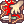
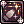
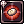
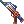
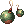

Apple's Guide to PvM Rebellion
| This guide has not been updated in a while. | ||
|---|---|---|
| Information on this page may be obsolete and outdated. Please refer to the author for information on future updates. Reason: "Last update in October 2016" |
||
Introduction to the Rebel
The Rebel, or as the game calls them, Rebellion, is a class that specializes in long-range attacks using a variety of Firearms at their disposal.
As part of the extended classes, the Rebel does not boast high amounts of HP and SP (although HP and SP and a variety of other aspects of the Rebel was increased with the Rebel's Awakening update) like the 3rd classes. This, however, does not mean that Rebels aren't able to hold their weight in fights.
The skills modifiers on all of Rebel's skills are arguably some of the highest in the game (with some reaching almost 10,000% with the right weapons and ammunition), making Rebel one of the more effective damage dealers in the game. For players who had played Gunslingers before, they would be very delighted to know that each weapon will receive new skills under the Rebel's skill tree, with each of them allowing Rebels to be more effective in dealing with all sorts of enemies!
For this particular guide, I'll mainly talk about the PvM aspect for Rebels as I'm not too familiar in the PvP aspect for the game. Also, this guide assumes that the player has a basic understanding of the other classes in Ragnarok Online and follows the most recent data from kRO which is implemented in NovaRO. Information here may not necessarily be the same as on other servers!
Without further ado, let's begin!
Rebel's Arsenal of Weapons
Firearms are the Rebel's (or Gunslingers, if you will!) choice of weapons and each of them are very different from each other. These weapons are: Pistols, Gatlings, Rifles, Shotgun and Grenade Launcher. I'll be explaining the advantages and disadvantages for each weapon so that you players can make an informed decision about which weapons you would like to use!
Don't worry, skills of Gunslingers and Rebels will be covered in another section!
Below is a comparison list for the weapon-types that a Rebel would use:
Pistols

| Advantages | Disadvantages |
|---|---|
| - Highest Base ASPD of all Firearms.
- Able to double-attack through the skill Chain Action. |
- Lowest ATK out of all Firearms.
- Other than Rapid Shower, Pistol Skills are generally close ranged! |
Pistols are the signature weapon of Rebels and there's definitely good reasons why they are!
Boasting the highest base ASPD of all the Firearms, it's really one of the weapons for a Rebel to easily reach 193 (max) ASPD and it comes with the ability to Double-Attack (as long as you've learned Chain Action), while other weapons requires the Rebel skill, Eternal Chain to be learned. More information regarding this Eternal Chain skill will be explained later.
The downside of this particular Firearm is that the Pistol generally has the lowest ATK out of all of the Firearms, although the attack speed you get out of this weapon will be more than enough to make up for it!
Gatling Guns
| Advantages | Disadvantages |
|---|---|
| - 2nd Highest Base ASPD of all Firearms.
- Has a higher ATK than Pistols. - Has access to one of the biggest AoE damage dealing skill in the game! |
- Gatling's signature skill, Gatling Fever, imposes a Flee and Movement Speed penalty.
- Not as easy to reach 193 ASPD as a Pistol. |
The Gatling Gun is primary choice of weapon for any Rebels who wants to focus on Attack Speed, as the Gatling Gun has a decent base ASPD, as well as a higher base ATK; both of which can be further increased through the skill Gatling Fever, making this the big brother version of the Pistol.
The Gatling Gun, however, loses the ability to proc Chain Action instead. This, however, could be solved through the skill Eternal Chain which gives Gatling Guns the ability to proc Chain Action, making this firearm the primary choice of weapon for any Rebels intending to defeat their enemies through sheer speed.
Rifles

| Advantages | Disadvantages |
|---|---|
| - Higher Base ATK than Gatling Guns and Pistols, but fulfills another role.
- Has access to one of the most damaging skill to a single-target/small AoE. - Has access to a skill that can increase your damage by 50% damage to an enemy! |
- Not easy to reach 193 ASPD with a Rifle.
- Gunslinger skills for Rifles are very lackluster. - High cast-time & after-cast delays as well as cooldowns. |
Rifles are considered one of the specialty firearms that a Rebel can use. Boasting higher base ATK than Gatling Guns, a Rifle can potentially do massive amount of damage (up to 9600% damage) through the skill Hammer of God at max level. Despite this, Rifles are rarely seen in the PvM environment due to the niche role it fulfills. The majority of Rifle's skills involves very calculated usage (much like itself!) of its skills as each most skills have a cast-time or huge after-delay of sorts.
Despite the lower base ASPD of the Rifle, it's entirely possible for a Rebel player to each 193 ASPD with the Rifle with the aid of several ASPD items. As most Rifle would give CRITs by itself, it's generally advisable for Rebels who choose Rifles to be specialized in CRITs for PvM!
The Rifle is also one of better weapons for PvP. Like previously mentioned, the Rifle has one of the highest damage modifiers for a skill in the game, hence it's entirely possible for Rebel players to decimate other players through sheer damage. However, since I'm not too much of a PvP person, I can't comment too much on this!
Shotguns

| Advantages | Disadvantages |
|---|---|
| - High Base ATK
- Has access to a ranged dispel! - Able to do ridiculous amounts of damage through Slug Shot. |
- VERY low base ASPD.
- Shotguns generally suffer from HIT penalties. |
If you're looking for big numbers for your damage, this is the firearm to pick up! By using the skill Slug Shot, a Rebel can easily destroy lower-tier MvPs in a single skill, thanks to the skill's massive damage modifier. It's entirely possible for a Rebel to hit more than 10,000% ATK using that skill!
Despite having big numbers, the Shotgun's weakness is the low base ASPD it has (you will have gear for ASPD almost exclusively to reach 193 ASPD) as well as the HIT penalties it suffers at longer ranges (specifically for Slug Shot). Not only that, Slug Shot has a long fixed and variable cast-time which makes it nearly impossible (other than in certain situations) to pull off quickly.
Still, Shotgun is still one of the preferred weapon in PvP, although like previously mentioned, I can't comment too much on the aspects of PvP!
Grenade Launchers
| Advantages | Disadvantages |
|---|---|
| - Highest Base ATK
- High Damage Modifiers in Skills |
- Lowest base ASPD of all Firearms |
The last firearm to be introduced is the Grenade Launcher. While the Grenade Launcher has the highest ATK of all firearms, it also has the lowest base ASPD of all firearms. In fact, it's so low that it's most likely impossible to reach 193 ASPD on this weapon.
Still, the Grenade Launcher has its uses. The skill Dragon Tail that is exclusive to the Grenade Launcher has 9000% ATK modifier and does not need to be "aimed" once a target has been marked by a Crimson Marker. The Grenade Launcher will perform fairly on both PvM and PvP aspects thanks to its huge ATK modifier, but because of its unwieldy nature, a Grenade Launcher is best relegated as a secondary weapon instead.
Which Firearm should I choose then?
With so many categories of Firearms to choose from, it's definitely troublesome to settle down on a weapon for usage.
As a way to guide new Rebel players, I'll separate the categories of weapons into 2 groups: Primary and Secondary Firearms.
What are the difference between this Primary and Secondary weapons?
Primary firearms are weapons that you'll find yourself using regularly for almost every scenario of your setting and it's very important for you to prioritize (in terms of upgrading, carding or even mastering) these firearms. Secondary firearms are weapons that will generally see less usage and instead will be used to increase your damage to the enemy during skill cooldowns, or simply applying a debuff to enemy. How each Secondary Firearms (if applicable) will be used in each of the build will be covered in the builds section.
Generally speaking, a PvM Rebel will most likely find themselves using Pistols and Gatling Guns most of the time, while the PvP Rebel will find more uses in Shotguns and Rifles.
| Setting | Weapons |
|---|---|
| PvM | Primary Firearms:
Secondary Firearms:
|
| PvP | Primary Firearms:
Secondary Firearms:
|
That said, the above combinations are just suggestions as a Shotgun is still a possible weapon for PvM due to the high damage modifier it brings to the fight. Likewise, a Pistol will still be a possible weapon in PvP as Desperado is still a force to be reckoned with, assuming certain conditions are met! (conditions will be elaborated later!)
Rebel's Skills

All of a Rebel's skills are segregated into their respective firearm branch, so it's important for a Rebel player to know what each skill does in the game. However, before we venture into a Rebel's skills, I would like to introduce Rebel players to the 1st class, Gunslinger's skills.
Gunslinger Skills
Like the Rebel, a Gunslinger's skill tree is also segregated into different branches, each respective to the firearm that they work with.
While a good majority of Gunslinger's skills (especially the weapon skills) will be replaced by Rebel's weapon skills, it's important for Rebels to know what each skills in the Gunslinger tree can offer them.
Passive Skills
Passive skills are exactly what it suggests! All these skills are mostly "supportive" and will be in effect no matter the circumstances!
 Single Action: This skill gives ASPD as well as Accuracy (HIT), making this one of the most important skills for Gunslingers to pick up.
Single Action: This skill gives ASPD as well as Accuracy (HIT), making this one of the most important skills for Gunslingers to pick up.- Chain Action: Chain Action gives Pistols the ability to proc Double-Attack. At max level, you'll have 50% chance of doing a double-attack. (Similar to normal double attack, this skill does crit).
- Snake's Eye: This skill gives both attack range and accuracy, making this one of the most important skills for Gunslingers to pick up.
Common Active Skills
While a majority of a Gunslinger's skills are separated into their firearm's branch, there are a few skills that is shared between all of the firearms. A good majority of these common active skills requires the usage of Coins, a resource that is unique to the Gunslinger and Rebel classes, so having a constant supply of coins is one of the things that a Gunslinger or Rebel must be aware of!
Coins are obtainable through the usage of Coin Flip.
Each coin that the player currently possesses is indicated as a white (Gunslinger) / blue (Rebel) orb that is hovering around the player. A smaller orb represents 1 coin, while a bigger orb represents 2 coins. The maximum amount of coins a Gunslinger or Rebel can hold at once are 10 coins. It's worth to note that each coin gives 3 ATK, so you can have a maximum of 30 ATK as long as you keep all 10 coins up! Therefore, it's definitely a good habit for any Gunslingers or Rebels to replenish their consumed coins as soon as possible!
 Coin Flip: This skill has a 50% chance of giving you a single coin, while consuming 1z in the process. You can keep casting this skill until you have 10 coins. The recast speed of this skill is dependent on the ASPD you currently have.
Coin Flip: This skill has a 50% chance of giving you a single coin, while consuming 1z in the process. You can keep casting this skill until you have 10 coins. The recast speed of this skill is dependent on the ASPD you currently have.- Cracker: Consuming 1 coin to attempt to stun the enemy at range and the success rates increases as you're closer to the enemy.
- Increase Accuracy: This skill works like a mini Attention Concentrate, making this one of the more important skill for a Gunslinger to pick up. By consuming 3 coins, you can get +4 AGI and DEX buff for 60 seconds.
- Madness Canceller (Last Stand): By using 1 coin, Last Stand gives a buff that increases your ATK by 100 and ASPD by 20% at the cost of being unable to move. While the skill sounds pretty powerful because of the ATK increase, it's unfortunate that this skill does not work with the two buff skills (Platinum Alter and Heat Barrel) of Rebel's.
 Adjustment: By consuming 2 coins, this skill gives a buff that adds an additional 30 Flee, as well as taking 20% less damage from ranged attacks, at the cost of -30 Accuracy for 30 seconds. Very situational, but still a good skill nonetheless!
Adjustment: By consuming 2 coins, this skill gives a buff that adds an additional 30 Flee, as well as taking 20% less damage from ranged attacks, at the cost of -30 Accuracy for 30 seconds. Very situational, but still a good skill nonetheless! Bull's Eye: Consumes 1 coin to do 500% ATK to an enemy. While the damage is certainly impressive, it's much better to keep your coins for other skills and all of Rebel's skill will out damage this skill.
Bull's Eye: Consumes 1 coin to do 500% ATK to an enemy. While the damage is certainly impressive, it's much better to keep your coins for other skills and all of Rebel's skill will out damage this skill.- Magical Bullet: Consumes 1 coin to add an ATK buff based on your MATK for all of your auto attacks. The duration of this buff is 30 seconds.
 Coin Fling: Consumes up to 5 coins in an attempt to reduce their DEF. More coins used means more damage dealt.
Coin Fling: Consumes up to 5 coins in an attempt to reduce their DEF. More coins used means more damage dealt. Triple Action: Consumes 1 coin to attack an enemy 3 times. This skill must be "targeted" on the enemy as you would with your other weapon skills.
Triple Action: Consumes 1 coin to attack an enemy 3 times. This skill must be "targeted" on the enemy as you would with your other weapon skills.
Pistol Skills
 Rapid Shower: Shoots 5 times at an enemy, with a 1000% ATK modifier at Lv10. Definitely a skill that a Gunslinger would pick up!
Rapid Shower: Shoots 5 times at an enemy, with a 1000% ATK modifier at Lv10. Definitely a skill that a Gunslinger would pick up! Desperado: A 3x3 PBAoE (AoE that centers around the player) ranged attack that has a chance to inflict up to 10 hits at 550% ATK each. Desperado is an amazing Pistol skill as it allows massive amounts of damage to be inflicted on an enemy in a short period of time. This skill can potentially climb to a maximum of 5500% (all 10 hits) ATK on enemy, although the chances of that happening is really small. Still, an average of 3-4 hits is definitely possible and the after-cast delay can be reduced by A Poem of Bragi (Bard's skill), allowing Gunslingers and Rebels to continuously spam Desperado to deal high amounts of damage to all nearby enemies.
Desperado: A 3x3 PBAoE (AoE that centers around the player) ranged attack that has a chance to inflict up to 10 hits at 550% ATK each. Desperado is an amazing Pistol skill as it allows massive amounts of damage to be inflicted on an enemy in a short period of time. This skill can potentially climb to a maximum of 5500% (all 10 hits) ATK on enemy, although the chances of that happening is really small. Still, an average of 3-4 hits is definitely possible and the after-cast delay can be reduced by A Poem of Bragi (Bard's skill), allowing Gunslingers and Rebels to continuously spam Desperado to deal high amounts of damage to all nearby enemies.
Gatling Skills
- Gatling Fever: The one and only skill for Gatling in the Gunslinger class. This skill is a toggle buff that gives up to 120ATK as well as 20% ASPD, although the drawbacks are 50% movement speed and -50 Flee. Best used together in a party with people actively taking the aggro of any monsters you're trying to kill. This is one skill you will not want to use if you're soloing as it slows down your movement speed and makes you extremely vulnerable to enemy attacks with the flee penalty.
Rifle Skills
 Tracking: Tracking is the skill that acts like a "Sniper Rifle". Has a small cast-time in order to inflict high amounts of damage to an enemy. Despite being a Rifle skill, this can be used with Pistols.
Tracking: Tracking is the skill that acts like a "Sniper Rifle". Has a small cast-time in order to inflict high amounts of damage to an enemy. Despite being a Rifle skill, this can be used with Pistols. Piercing Shot: Pierces the DEF of an enemy and has a chance of inflicting Bleeding status to the said enemy. Despite being a Rifle skill, this can be used with Pistols.
Piercing Shot: Pierces the DEF of an enemy and has a chance of inflicting Bleeding status to the said enemy. Despite being a Rifle skill, this can be used with Pistols.-  Disarm: Tries to disarm (think of Rogue's Strip Weapon) the enemy. Has its uses, but will be replaced by Rebel's Shotgun skills.
Shotgun Skills
- Dust: Dust is the AoE skill for Shotguns. It certainly has its uses, but Rebel's Shotgun skill will replace this skill.
 Full Blast: Full Blast has the highest damage modifiers out of all the Gunslinger's (in a single attack) skill, but it comes with a chance of Blinding yourself. While this is certainly a good skill for Gunslingers aiming to PvM, this skill is replaced by Rebel's Slug Shot.
Full Blast: Full Blast has the highest damage modifiers out of all the Gunslinger's (in a single attack) skill, but it comes with a chance of Blinding yourself. While this is certainly a good skill for Gunslingers aiming to PvM, this skill is replaced by Rebel's Slug Shot.
Grenade Launcher Skills
 Spread Attack: Spread Attack is Grenade Launcher's AoE skill. This skill definitely has its uses as a Gunslinger, but will be replaced by Rebel's Gatling skill.
Spread Attack: Spread Attack is Grenade Launcher's AoE skill. This skill definitely has its uses as a Gunslinger, but will be replaced by Rebel's Gatling skill. Ground Drift: Ground Drift is Grenade Launcher's "mine laying" skill. This skill will be replaced by Rebel's Grenade Launcher skill.
Ground Drift: Ground Drift is Grenade Launcher's "mine laying" skill. This skill will be replaced by Rebel's Grenade Launcher skill.
Rebel Skills
As a Rebel, you'll have access to a wider range of skills of each individual firearm branch, as well as access to some of the more powerful ATK buffs available in the game. Below is a list of all Rebel's skills, as well as skills that are worthy of note.
Common Active Skills
Like its Gunslinger counterpart, most of these active skills requires the use of coins for activation. Some of these skills will consume as many as 10 coins and will have different level of effects depending on the coins consumed.
 Rich's Coin: This skill is an upgrade to Coin Flip. By consuming 100z, you'll instantly gain all 10 coins without any chance of failure.
Rich's Coin: This skill is an upgrade to Coin Flip. By consuming 100z, you'll instantly gain all 10 coins without any chance of failure.- Platinum Alter: Consumes all coins in order to give a buff that increase of ATK as well as a shield that blocks damage for up to 25% of your MaxHP (similar to a Priest's Kyrie Eleison). This buff will expire once the shield has been depleted, when the skill has reached the end of its duration or when the player switches to another ammunition that is not Holy-element. An interesting thing about this skill is that the ATK buff is tied to the amount of coins consumed, so the more coins you have when you use this skill, the more ATK will be granted! This skill also requires Holy-element bullets to be equipped and has duration of 90 seconds at max level with no cooldown, making it the primary skill for Rebels to improve their survivability and damage. Platinum Alter does not stack with Heat Barrel. If you cast Platinum Alter while Heat Barrel is active, you will not receive the buff from Platinum Alter.
-  Heat Barrel: Consumes all coins to give a buff that increases your ATK up to 200%, gives up to 5 flat ASPD with a penalty of up to 50 HIT at max level. This skill, like Platinum Alter, will grant you bonus ATK based on the amount of coins consumed. This skill has a duration of 60 seconds at max level and has a cooldown of (100 at Lv1 ~80 at max level) seconds, which means you can't keep Heat Barrel up continuously, making it a skill that you should only use when facing off bosses! Heat Barrel does not stack with Platinum Alter! WARNING: Do not switch equipments if you have Heat Barrel active. By doing so, you'll put Heat Barrel on a cooldown and not receive the Heat Barrel buff! Similarly, casting Heat Barrel with Platinum Alter active will result in Heat Barrel on cooldown without receiving the buff!
- Flicker: This skill will only have effects when you have a Bound Trap or Howling Mine active. By consuming 1 coin, Flicker will detonate all Bound Trap and Howling Mine that are on screen upon usage.
-  Bound Trap: Consumes 1 coin and a Special Alloy Trap to place a 7x7 AoE trap which slows the enemy down. Not only that, if you were to use Flicker, the trap will detonate, dealing damage proportional to the enemy's current HP (15%).
 Crimson Marker: Another Rebel's iconic skill. By consuming 1 coin to mark an enemy for 30 seconds, certain skills (Quick Draw Shot, Dragon Tail and Hammer of God) will have increased damage done to them. This also marks the Marked enemy on your mini-map for the duration of the Marker. Only a maximum of 3 enemies can be marked and you'll not be able to mark any enemies further until a mark expires.
Crimson Marker: Another Rebel's iconic skill. By consuming 1 coin to mark an enemy for 30 seconds, certain skills (Quick Draw Shot, Dragon Tail and Hammer of God) will have increased damage done to them. This also marks the Marked enemy on your mini-map for the duration of the Marker. Only a maximum of 3 enemies can be marked and you'll not be able to mark any enemies further until a mark expires. Eternal Chain: Consumes 1 coin to provide a buff that allows Chain Action to be proc with ANY weapons. This means all Rebel's firearms will have the ability to do double-attack, allowing Quick Draw Shot to be triggered. This buff has a duration of 180 seconds at max level.
Eternal Chain: Consumes 1 coin to provide a buff that allows Chain Action to be proc with ANY weapons. This means all Rebel's firearms will have the ability to do double-attack, allowing Quick Draw Shot to be triggered. This buff has a duration of 180 seconds at max level.- Quick Draw Shot: This skill will only be trigger-able if only Chain Action procs making this skill the most important skill for any auto-attacking Rebel. Upon triggering this skill, the Rebel will inflict an additional 4 hits (6 hits if the target is being marked by Crimson Marker). Since there's no cooldown to this skill and Chain Action actually procs pretty often (50% chance), a Rebel will be able to spam this skill quite frequently for extra damage. As Chain Action only procs with Pistol, the buff that Eternal Chain provides mean that all firearms could proc Chain Action, effectively allowing Quick Draw Shot to be used with any firearms. Quick Draw Shot will also damage ALL enemies marked by Crimson Marker in a 21x21 AoE, allowing a Rebel to tackle as many as 3 marked monsters at once with this skill.
Pistol Skills
- Fallen Angel: Fallen Angel is like a Champion's Snap/Relocate skill. This skill consumes 1 coin in order to instantly "move" to the targeted location and doubles the damage of Desperado for 2 seconds after moving to the targeted location. If the targeted location is unreachable, this skill will fail.
 Fire Dance: Fire Dance is very similar to Desperado, except it does a single hit with a bigger 5x5 PBAoE (AoE that centers around the player) at a 1000% ATK. Despite that, Desperado's damage potential is still higher than Fire Dance as 2 hits of Desperado (a Desperado would have an average of 2-3 hits) would have already out-damage a single Fire Dance. However, because of how fragile Rebels are in combat, it's usually not recommended that Rebels try to Fire Dance or Desperado through the enemies!
Fire Dance: Fire Dance is very similar to Desperado, except it does a single hit with a bigger 5x5 PBAoE (AoE that centers around the player) at a 1000% ATK. Despite that, Desperado's damage potential is still higher than Fire Dance as 2 hits of Desperado (a Desperado would have an average of 2-3 hits) would have already out-damage a single Fire Dance. However, because of how fragile Rebels are in combat, it's usually not recommended that Rebels try to Fire Dance or Desperado through the enemies!
Gatling Skills
- Fire Rain: Fire Rain has an interesting AoE: a 3x10 AoE in front of the Rebel that does up to 5000% ATK with a chance of removing ground based skills. Despite the high damage it offers, Fire Rain is a very unwieldy skill because of its rectangular-shaped AoE.
- Round Trip: Round Trip is definitely one of Rebel's signature Gatling skill. Boasting up to a massive 13x13 PBAoE (AoE that centers around the player) at max level, Round Trip is able to do up to 2500% ATK, pushing back the enemies as well as potentially damaging the enemy further if they hit a wall. Definitely a skill you would want to keep yourself safe as well as damaging enemies!
Rifle Skills
- Mass Spiral: Mass Spiral uses a special ammunition called Full Metal Jacket and it allows the Rebel to additional damage based on the DEF of the enemy.
- Anti-Material Blast: Anti-Material Blast or AMB, is definitely one of the better Rifle skills a Rebel could use. Each cast has a 70% chance of inflicting a -50% demi-human resistance on the enemy, which essentially mean doing 50% more damage on the monster from all kinds of player attacks (imagine the amount of damage your party could do!).
 Hammer of God: The ultimate Rifle skill that a Rebel has in the Rifle branch. Inflicting up to a massive 9600% ATK on an enemy, this skill has a lengthy skill cool-down upon usage, although most enemies (in a PvP setting) will most like be dead or trying to recover that huge chunk of health removed from them. Because of this lengthy skill cool-down (30 seconds), this skill is rarely used out of PvP as boss enemies in a PvM setting tend to have tens of millions of HP which this skill can't simply remove in a single cast. If Hammer of God was used on an enemy that is not marked by Crimson Marker, the damage inflicted will be lessen. This skill is forced neutral, meaning the element of your equipped ammunition doesn't carry over into the skill.
Hammer of God: The ultimate Rifle skill that a Rebel has in the Rifle branch. Inflicting up to a massive 9600% ATK on an enemy, this skill has a lengthy skill cool-down upon usage, although most enemies (in a PvP setting) will most like be dead or trying to recover that huge chunk of health removed from them. Because of this lengthy skill cool-down (30 seconds), this skill is rarely used out of PvP as boss enemies in a PvM setting tend to have tens of millions of HP which this skill can't simply remove in a single cast. If Hammer of God was used on an enemy that is not marked by Crimson Marker, the damage inflicted will be lessen. This skill is forced neutral, meaning the element of your equipped ammunition doesn't carry over into the skill.
Shotgun Skills
- Shattering Storm: Shattering Storm is good at one thing: destroying the enemy's equipments if it hits the enemy, which is incredibly useful in a PvP scenario. With a small cast time, this skill can inflict up to 2700% ATK in a 7x7 AoE.
- Banishing Buster: With a small cast time, this skill is capable of inflicting up to 3500% ATK and up to 100% chance to remove all buffs from enemies at max level, if it hits. This is incredibly useful in a PvP scenario where most players will have buffs that aids them in defeating other players.This might be useful in a PvM setting, but it's definitely more relevant to PvP where you would like to remove buffs from your enemies.
 Slug Shot: The ultimate Shotgun skill that a Rebel has in the Shotgun branch. This skill can do up to 6000% ATK on monsters in PvM and up to 10000% ATK on players in PvP. Not only that, the damage of the skill is further increased by the weight of Slug Rounds that is being used. In NovaRO, there's only 1 kind of Slug Round (Slug Shot XH, which weights an incredible 120 weight per piece) being sold at the Bullets Vendor, so you can be sure that your Slug Shot is doing the highest damage possible in all scenario. The downside of this skill is that you'll gradually lose HIT when you're further away from the enemy you're trying to attack. This skill has a cooldown of 5 seconds and is forced neutral, meaning the element of your equipped ammunition doesn't carry over into the skill.
Slug Shot: The ultimate Shotgun skill that a Rebel has in the Shotgun branch. This skill can do up to 6000% ATK on monsters in PvM and up to 10000% ATK on players in PvP. Not only that, the damage of the skill is further increased by the weight of Slug Rounds that is being used. In NovaRO, there's only 1 kind of Slug Round (Slug Shot XH, which weights an incredible 120 weight per piece) being sold at the Bullets Vendor, so you can be sure that your Slug Shot is doing the highest damage possible in all scenario. The downside of this skill is that you'll gradually lose HIT when you're further away from the enemy you're trying to attack. This skill has a cooldown of 5 seconds and is forced neutral, meaning the element of your equipped ammunition doesn't carry over into the skill.
Grenade Launcher Skills
- Howling Mine: Howling Mine works like Ground Drift, except it "sticks" onto the enemy. Once stuck on an enemy, the Rebel could use Flicker in order to detonate the Mine, dealing additional damage, up to a total of 3200% ATK. While the damage is pretty impressive, Howling Mine is definitely a tedious skill to use as compared to some of the other skills available to a Rebel. This skill requires the use of a Projection Landmine item.
- Dragon Tail: Dragon Tail requires the use of a Dragon Tail Missile item and a Marked Target through the use of Crimson Marker. When activated, the Marked targets will be unmarked and the skill will do a massive 9000% ATK, split evenly between all enemies that are marked. With such a high damage modifier, this skill certainly has its uses in both PvM and PvP settings! This skill has a cooldown of 5 seconds and is forced neutral, meaning the element of your equipped ammunition doesn't carry over into the skill.
Rebel Stats and Builds
Now that you've been introduced to the skills that a Gunslinger and Rebel has, it's finally the time to introduce the essential stats and builds that a Rebel will most likely follow!
All builds will assume that the player has reached the max base level of 175 and max job level of 60, which means the player has 69 Gunslinger skill points 59 Rebel skill points.
Note that the stats and skill builds mentioned below are merely suggestions and that you may want to customize these build suggestions to you liking, especially since you're more than likely to know what kind of experience you would like for yourself than me!
Stats Points Allocation
Like all of the other classes in the game, the Rebel has STR, AGI, VIT, INT, DEX and LUK to work with. Depending on the build you're interested in, the allocation of stats can greatly differ from each other. In general, these are the pointers for each stats point:
STR: While majority of the damage does not come from STR as a Rebel, some points in STR will allow you carry more ammunition (especially if you're a shotgun user for PvP, those Slug rounds gets incredibly heavy!) and with the added bonus of getting some ATK out of the STR you've invested. LUK is more efficient in raising your ATK, however.
AGI: AGI is really important for classes that focuses on using auto attacks on enemies. Without AGI, it's hard to imagine how a Rebel would reach max ASPD. Definitely a stat you would want to invest in, as long as your focus is auto attacking!
VIT: While most ranged players would forgo VIT as part of their build, VIT is a highly valued stat to me. With more HP means a Rebel could take more hits before dying and more HP works very well with Platinum Alter!
INT: Since the Rebel's SP pool isn't exactly the biggest you'll ever see, some investment of points into INT is probably recommended. There are certainly uses for more INT, since Magical Bullet works well with increased MATK, although this is a really niche build.
DEX: The most important stat for any ranged characters. DEX is the number one stat that you would want to invest in, as it not only gives you higher accuracy, more damage, it also gives you some ASPD. While the increase is not as significant as AGI in terms of ASPD, it's still a welcomed bonus as a ranged character would need high amounts of DEX no matter what!
LUK: This stat is for those who focuses on CRIT builds. Not only that, it gives you a small increase of ATK, so it might be a better investment than STR for some people.
Auto Attack Build
This build focuses on attacking your enemies at the highest ASPD possible while using Chain Action and Quick Draw Shot to deal extra damage as you attack them.
While this particular build does not have the flashy damage as the other builds that I'll be mentioning later, this build does have the advantage of having a decent continuous damage throughout the fight without any downtime. If you're that kind of player (like me!) who likes to click on monsters and don't think too much into it, this is definitely the build for you!
A Rebel could choose either a pair of Pistols or a Gatling Gun as their Primary Weapon for this particular build, although a Gatling Gun will definitely be preferred choice as the Rebel improves their equipment. The Rebel could choose between Shotgun, Rifle or Grenade Launcher for their Secondary Weapon.
Important Skills
As this particular build will revolve around Pistols and Gatling Guns, we'll be picking up skills from the Pistols and Gatling Guns branch as primary choice of firearms for both Gunslinger and Rebel. I'll also denote the skill level required for each skill, a short explanation of each skill as well as the secondary choice of firearms for this particular build.
Gunslinger
Gatling Gun and Pistols as Primary Firearm:
- Single Action (Lv9 / 10): Between Lv9 and Lv10, Single Action only gives an additional 2 Accuracy. This means by losing 2 HIT, you can gain access to another skill!
- Chain Action (Lv10 / 10): Maxing Chain Action is really important for an auto attacking Rebel as it maximizes the chances of you having a Double-Attack! The effect of Eternal Chain is dependent on this too.
- Snake's Eye (Lv10 / 10): Maxing Snake's Eye will allow you to attack at the maximum range possible. You wouldn't want to stay too close to an enemy!
- Coin Flip (Lv5 / 5): Maxing Coin Flip is a requirement for Rich's Coin, which will ultimately replace Coin Flip.
- Increase Accuracy (Lv1 / 1): An additional +4AGI/DEX is always nice!
- Adjustment (Lv1 / 1): A situational buff that might just save you!
- Magical Bullet (Lv1 / 1): Adding a little bit more damage to your attacks for 1 skill point is really worth it.
- Rapid Shower (Lv7 / 10): As a Gunslinger, chances are that you'll max this skill for leveling. However, once you've reached to the class of Rebel, Rapid Shower will gradually be replaced with auto-attacks, so it's recommended for you to reset your skills at the Main Office once you've reached Rebel to free up 3 additional skill points that could be allocated to other skills in the Gunslinger tree.
- Desperado (Lv10 / 10): Desperado is an amazing mobbing skill that is capable of defeating most low-level monsters in a cast or two. Later on, if you're feeling adventurous (and tanky enough), you could get a Minstrel with "A Poem of Bragi" to allow you to spam Desperado for ridiculous amounts of damage!
- Gatling Fever (Lv10 / 10): As the Gatling Gun is 1 of the 2 primary firearms you'll use for this build, there's really no reason to say no to free damage from Gatling Fever!
Total Gunslinger Skill Points consumed: 64 skill points.
Now that you have 5 skill points left over, you may want to invest them into either the Rifle, Shotgun or Grenade Launcher skill tree, depending on your secondary weapon preferences.
If you're using Shotgun as a Secondary Firearm:
Note: Using Shotgun as a secondary will eat into your Rebel skill points (a total of 4 Rebel skill points), as all of the other Gunslinger skill listed above as essential to an auto-attack Rebel.
If you're using Grenade Launcher as a Secondary Firearm:
- Spread Attack (Lv7 / 10)
- Ground Drift (Lv1 / 10)
Note: Using Grenade Launcher as a secondary will eat into your Rebel skill points (a total of 3 Rebel skill points), as all of the other Gunslinger skill listed above as essential to an auto-attack Rebel.
If you're using Rifle as a Secondary Firearm:
- Tracking (Lv5 / 10)
- Piercing Shot (Lv1 / 10)
Note: Using Rifle as a secondary will eat into your Rebel skill points (a total of 1 Rebel skill points), as all of the other Gunslinger skill listed above as essential to an auto-attack Rebel.
Now that we've finished allocating the allotted Gunslinger skills, we'll start picking up skills from the Pistols and Gatling Guns branch of Rebel.
Rebel
Gatling Gun and Pistols as Primary Firearm:
- Rich's Coin (Lv1 / 1): This skill will instantly give you 10 coins, saving you lots of time compared to slowly going through Coin Flip. This is extremely important as Platinum Alter and Heat Barrel consumes all coins upon cast.
- Platinum Alter (Lv5 / 5): As one of the primary source of damage (on top of giving you a really good shield), you will definitely want to max this no matter which build you choose.
- Heat Barrel (Lv5 / 5): Heat Barrel gives a huge boost of damage when used, on top of giving you +5 flat ASPD. There's really no reason to not take this! Heat Barrel, however, has a cool-down that is longer than its duration, so only use it when required!
- Flicker (Lv1 / 1): This is a requirement for Bound Trap!
- Bound Trap (Lv5 / 5): Higher levels of Bound Trap increases its AoE size and duration. Since any enemies in the AoE of a Bound Trap will be slowed down, this gives you the opportunity to re-position yourself if needed. As an added effect, you may even detonate this through the usage of Flicker, dealing extra damage proportional to the enemy's current HP.
- Crimson Marker (Lv1 / 1): Crimson Marker increases the damage you do with Quick Draw Shot, so it's a really good addition!
- Quick Draw Shot (Lv1 / 1): Quick Draw Shot is your main source of damage (other than Chain Action) as an Auto-attacking Rebel.
- Eternal Chain (Lv10 / 10): Eternal Chain allows Chain Action to be used with any other weapons, and in this case, your Gatling Gun will be able to receive Chain Action and in turn, use Quick Draw Shot!
- Fallen Angel (Lv1 / 1): To be used together with Desperado, or simply just to move around like a Champion can with Relocate/Snap.
- Fire Dance (Lv5 / 5): While Desperado is arguably a better damaging skill, Fire Dance has its uses at times (lower after-cast delay as well as a more reliable damage source).
- Fire Rain (Lv5 / 5): Despite not using this skill most of the time, you might as well max this skill for that 5000% ATK!
- Round Trip (Lv5 / 5): This is one of the best AoE skill in the game, so go ahead and max it for that 13x13 AoE!
Total Rebel Skill Points consumed: 45 skill points.
Now that you have 14 skill points left, you may want to invest them into your choice of secondary firearm skill tree. Note that the amount of skill points left differs for each secondary firearm that you've chosen.
If you're using Shotgun as a Secondary Firearm:
- Shattering Storm (Lv1 / 5): Due to the nature of Shattering Storm, this skill does not see much use out of PvP. In terms of AoE damage Round Trip's 13x13 PBAoE will outdo Shattering Storm's 7x7 AoE, so there's really no reason to pick up this skill other than being a requirement for Banishing Buster.
- Banishing Buster (Lv4 / 5): Banishing Buster with its 3200% ATK has potential uses in PvM, such as removing monster's buffs at a 90% chance.
- Slug Shot (Lv5 / 5): This is the best skill your secondary firearm has to offer. While it's incredibly hard to find a use for Slug Shot when you're already attacking at 193 ASPD, you can always get some fun out of defeating lower-tier MvPs in a single Slug Shot cast!
Note: If you've chosen Shotgun as your secondary firearm, you'll start off with 10 skill points left (as a result of taking Shotgun related skills in the Gunslinger skill tree).
If you're using Grenade Launcher as a Secondary Firearm:
- Howling Mine (Lv5 / 5): While you're using a Grenade Launcher, there's no reason not to take advantage of the Rebel's skill for Grenade Launcher.
- Dragon Tail (Lv5 / 5): This is the best skill your secondary firearm has to offer. At a massive 9000% ATK modifier, Dragon Tail can be a good "finisher" to your Crimson Marked target. Alternatively, you can start off a fight by casting Dragon Tail, then switching to your primary firearm and switching back to Grenade Launcher for another Dragon Tail when it's off cooldown.
- Leftover 1 skill point can be placed into Single Action for an additional 2 HIT.
Note: If you've chosen Grenade Launcher as your secondary firearm, you'll start off with 11 skill points left (as a result of taking Grenade Launcher related skills in the Gunslinger skill tree).
If you're using Rifle as a Secondary Firearm:
- Mass Spiral (Lv1 / 5): Mass Spiral is a skill that you'll barely use due to its low damage modifier so there's really no reasons to pick this skill up other than being a requirement for Anti-Material Blast.
- Anti-Material Blast (Lv5 / 5): Anti-Material Blast is the 2nd best Rifle skill, due to the potential 50% demi-human resistance debuff it can inflict on bosses, essentially allowing everyone in your party to hit for 50% more damage.
- Hammer of God (Lv5 / 5): This is the best skill your secondary firearm has to offer. Like Dragon Tail, this skill can be used to start off a fight. It's important for you to have a Crimson Marker on the enemy you wish to cast Hammer of God on as it'll increase the amount of damage this skill does to the enemy.
- Left over 2 skill points can be placed into Single Action for an additional 2 HIT, as well as another skill of your choice.
Note: If you've chosen Rifle as your secondary firearm, you'll start off with 13 skill points left (as a result of taking Rifle related skills in the Gunslinger skill tree).
Stats Allocation
Below is a table of stats points allocation for reference. Remember, the numbers below are just a suggestion and you might want to make changes to them as to your liking. The table will also assume that the Rebel player would choose Heroic Backpack as part of their equipment, so if you don't use one, feel free to not follow the numbers on both STR and VIT!
| Stats | Base Points | Notes |
|---|---|---|
| STR | 90 | 90 STR is only required if you have a Heroic Backpack. |
| AGI | 120 | 120 AGI will enable you to get 193 ASPD easily with Pistols. |
| VIT | 90 | 90 VIT is only required if you have a Heroic Backpack. |
| INT | Leftovers | Any amounts of leftover stats points could be allocated here! Although more INT points means getting more damage out of Magical Bullet! |
| DEX | 120 | 120 DEX is required for gaining that 5% Ranged Attack off the DEX Temporal Boots. |
| LUK | Leftovers | Any amounts of leftover stats points could be allocated here! |
Critical Build
This build shares many similarities with the Auto-attacking build, except it places focus on CRITs instead of using Quick Draw Shot to defeat enemies.
By utilizing CRITs, a CRIT orientated Rebel will be able to put out some very impressive damage, since CRITs deals maximum amount of damage possible in a single attack. However, due to CRITs being overwritten by Double-Attack, you would want to avoid Chain Action at all costs, so not using a Pistol is recommended.
NOTE: While it's certainly possible to reach 193 ASPD with a Rifle, you'll most likely need to equip quite a bit of ASPD gears, as well as using several AGI food. Heat Barrel is an extremely useful skill for Rifles to reach 193 ASPD.
A CRIT orientated Rebel will use Gatling Guns and Rifles almost exclusively, as CRIT orientated Rebels will not use any weapon skills (such as Slug Shot or even Desperado) as these skills lack the ability to CRIT. Hence, as a CRIT Rebel, both the Gatling Guns and Rifles will be your primary and secondary weapons. A CRIT Rebel can also pick up a pair of Pistols for taking advantage of Desperado, but it's not a requirement.
Important Skills
As this particular build will revolve around Gatling Guns and Rifles, we'll be picking up skills from the Gatling Guns and Rifles branch for both Gunslinger and Rebel. I'll also denote the skill level required for each skill, as well as a short explanation of each skill.
Gunslinger
- Single Action (Lv10 / 10): Having that 2 extra HIT between Lv9 and Lv10 might make a difference for some monsters!
- Chain Action (Lv3 (or 10) / 10): Although Chain Action interferes with CRITs, as long as you do not use Eternal Chain or use a pair of Pistols, Chain Action will never proc. As the CRIT build only utilizes 2 weapons, there will be more skill points leftover in the Gunslinger skill tree than you'll know what to do with, so adding skill points into Chain Action to Lv10 will enable you to use Pistols. If not, you can always leave this at Lv3 instead.
- Snake's Eye (Lv10 / 10): Maxing Snake's Eye will allow you to attack at the maximum range possible. You wouldn't want to stay too close to an enemy!
- Coin Flip (Lv5 / 5): Maxing Coin Flip is a requirement for Rich's Coin, which will ultimately replace Coin Flip.
- Increase Accuracy (Lv1 / 1): An additional +4AGI/DEX is always nice!
- Magical Bullet (Lv1 / 1): Adding a little bit more damage to your attacks based off your MATK for 1 skill point is really worth it.
- Adjustment (Lv1 / 1): A situational buff that might just save you!
- Rapid Shower (Lv7 / 10): While a CRIT Rebel does not use Rapid Shower, this is still a very useful leveling skill as a Gunslinger. Rapid Shower is also a requirement for Gatling Fever.
- Desperado (Lv5 (or 10) / 10): While Gatling Fever only requires 5 levels of Desperado to be unlocked, Desperado is an amazing source of damage that should not be underestimated. Chances are that you'll have more skill points than you'll know what to do with the CRIT build, so investing 5 more skill points in Desperado is a very valid option.
- Gatling Fever (Lv10 / 10): As the Gatling Gun is 1 of the 2 primary firearms you'll use in this build, there's really no reason to say no to free damage from Gatling Fever.
- Tracking (Lv5 / 10): While Tracking is not a very impressive skill by itself, Tracking is required for unlocking the Rebel's Rifle skill branch.
- Piercing Shot (Lv1 / 10): Piercing Shot is also required for unlocking the Rebel's Rifle skill branch.
If you choose not to add skill points into Chain Action or Desperado, you should have a couple of spare skill points lying around. As previously mentioned, a CRIT Rebel will rarely find themselves in situations where they would have to cast a damage dealing skill, so it's really up to your imagination on how you want to branch off from here!
Rebel
- Rich's Coin (Lv1 / 1): This skill will instantly give you 10 coins, saving you the trouble of slowly going through Coin Flip. This is extremely important as Platinum Alter and Heat Barrel consumes all coins upon cast.
- Platinum Alter (Lv5 / 5): As one of the primary source of damage (on top of giving you a really good shield), you will definitely want to max this no matter which build you choose.
- Heat Barrel (Lv5 / 5): Heat Barrel gives a huge boost of damage when used, on top of giving you +5 flat ASPD. There's really no reason to not take this! Heat Barrel, however, has a cool-down that is longer than its duration, so only use it when required! Any Rebels using Rifles will definitely require this skill in order to reach 193 ASPD.
- Flicker (Lv1 / 1): This is a requirement for Bounding Trap!
- Bound Trap (Lv5 / 5): Higher levels of Bound Trap increases its AoE size and duration. Since any enemies in the AoE of a Bound Trap will be slowed down, this gives you the opportunity to re-position yourself if needed. As an added effect, you may even detonate this through the usage of Flicker, dealing extra damage proportional to the enemy's current HP.
- Crimson Marker (Lv1 / 1): Crimson Marker increases the damage you do with Hammer of God, so this is a skill you would want to use.
- Mass Spiral (Lv1 / 5): As a CRIT Rebel, you'll rarely find yourself in situations where you'll actually have to cast a damage dealing skill and coupled with the low ATK modifier of Mass Spiral, there's really no reason to pick this skill up beyond it as a requirement for Anti-Material Blast.
- Anti-Material Blast (Lv5 / 5): This skill inflicts a debuff that increases the damage done on attacks to the enemy (if successful), so there's really no reason not to pick it up!
- Hammer of God (Lv5 / 5): As this is the best Rifle skill in the Rebel's Rifle branch, there is no reason not to take this. Note that this particular skill has a really lengthy skill cool-down. This skill will only do its full damage if the target has been marked by a Crimson Marker.
- Fire Rain (Lv1 / 5): Like previously mentioned, you'll rarely find situations where you'll have to cast a damage dealing skill, so it's entirely possible for you allocate only 1 skill point to this skill to just pick up Round Trip.
- Round Trip (Lv5 / 5): Even as a CRIT Rebel, this skill will probably be your most used skill when it comes to mobbing. There's really no other skill that can replace the mob clearing ability of this skill.
Stats Allocation
Below is a table of stats points allocation for reference. Remember, the numbers below are just a suggestion and you might want to make changes to them as to your liking. The table will also assume that the Rebel player would choose Heroic Backpack as part of their equipment, so if you don't use one, feel free to change the numbers between the stats!
| Stats | Base Points | Notes |
|---|---|---|
| STR | 90 | While STR is not a very important stats to CRIT Rebels, the ability to carry more weight (and getting that extra 20 ATK from a +7 HBP) is something to be considered.
You may want to reduce the amount of STR you have in order to add more stats to DEX. |
| AGI | 120 | AGI is required for Rebels to reach 193 ASPD. |
| VIT | Leftovers | If you value HP more than damage, you will want to place your leftover stats points here. |
| INT | Leftovers | If you value damage more than HP, leftover stats points can be placed here so that you'll get a *little* bit more damage out of Magical Bullet. Personally, I'll take HP! |
| DEX | 90 | DEX is still one of the important stats for Rebels and putting DEX at 90 is still pretty reasonable. It's entirely possible to push this up to 100 if you are willing to sacrifice points in other stats. |
| LUK | 120 | 120 LUK is most definitely required to get the most out of the LUK Temporal Boots. |
Slug Shot Build
The Slug Shot build is an extremely simple build that follows a very simple philosophy: dealing the maximum possible damage in a single skill-cast. Just a note that this particular build is entirely considered a "for-fun" build in the PvM setting as it's very unfeasible for a Slug Shot build to go around with parties to Instances and higher tier MvPs as it takes too long for Slug Shot to cast to be effective as compared to CRIT or auto-attack builds.
Due to the massive ATK modifier that is possible with Slug Shot, it's entirely possible to defeat lower tier MVPs (Moonlight Flower, Golden Thief Bug, etc...) in a single Slug Shot cast. In fact, with the XH Slug Ammunition, the damage modifier could easily reach 10,000% or even more. However, because of the huge fixed casting time on this skill, it makes the skill extremely unwieldy in most situations.
The weapon of choice for a Slug Shot build would be a Death Fire [1]. With a huge 400 base ATK, the Death Fire has the highest damage among all of the Shotguns in the game, making it an ideal candidate to use Slug Shot with. However, the Death Fire suffers from -50HIT penalty. Adding on top of the Slug Shot's HIT penalty, a Rebel might just find themselves missing a lot on certain monsters that has high enough flee.
A Slug Shot Build would probably be more PvP orientated than PvM, although it's still fun to see some really big numbers flying out from a monster!
Important Skills
Gunslinger
- Single Action (Lv10 / 10): This skill increases your HIT and ASPD. While ASPD is not a very important stat to a Slug Shot build, the HIT is sorely needed. Death Fire has a huge HIT penalty, so having every bit of HIT counts.
- Snake's Eyes (Lv10 / 10): This skill increases your HIT and attack range. Although Slug Shot does not have an incredible range for casting, this skill could mitigate some of the HIT penalties from Slug Shot and Death Fire.
- Tracking (Lv7 / 10), Disarm (Lv1 / 10), Dust (Lv1 / 10): All 3 of these skills are a requirement for unlocking Shattering Storm.
- Increase Accuracy (Lv1 / 1): A buff of +4 AGI and DEX for 1 coin can be invaluable!
- Magical Bullet (Lv1 / 1): Converts MATK into ATK for even more damage!
- Adjustment (Lv1 / 1): You probably will find little use for this skill, but an increase of 30 Flee and 20% ranged damage reduction might just save you in some situations.
These are the important skills to pick up for the build. You'll definitely be left with lots of skill points on the Gunslinger skill tree and it's up to your discretion to pick up any other firearms as you see fit. Going Pistols? Take Chain Action, Rapid Shower, Desperado. Going Gatling? Take Gatling Fever.
Rebel
- Rich's Coin (Lv1 / 1): Like all of the other builds, the Rebel relies heavily on Coins for many of their skills. This skill will save tremendous amount of time and effort as compared to Coin Flip.
- Platinum Alter (Lv5 / 5): Platinum Alter is one of the best skill to increase your durability in any fights, so there's really no reasons not to take this.
- Heat Barrel (Lv5 / 5): Heat Barrel is one of the best skills to increase your damage, so like Platinum Alter, there's really no reasons not to take this.
- Flicker (Lv1 / 1): Flicker will allow you to detonate Bounding Trap and is also a requirement for the skill.
- Bounding Trap (Lv5 / 5): This skill will allow you to slow down an approaching enemy as to allow you to cast your Slug Shot. You can also detonate the trap in order to do damage to the enemy!
- Shattering Storm (Lv5 / 5): Picking this up as part of the Slug Shot build will allow you to have more freedom with your Shotgun skills and you can even go into PvP if you want to!
- Banishing Buster (Lv5 / 5): Like Shattering Storm, you will probably find more uses for this in PvP than in PvM.
- Slug Shot (Lv5 / 5): Since this whole build revolves around this skill, you'll definitely want to max this out!
Optional (only if you've taken the Pistol branch in Gunslinger):
- Fallen Angel (Lv1 / 1): You might find usefulness out of this skill to instantly move to your targeted location, although this means you'll have to invest skill points into the Pistol branch as a Gunslinger.
These are the main skills of a Slug Shot build, although chances are that you'll only need Slug Shot. Heat Barrel or Platinum Alter can help you further increase your damage for Slug Shot, so remember to use them before using Slug Shot!
You'll definitely be left with lots of skill points on the Rebel skill tree by just taking the Shotgun tree, so like previously mentioned, you can always pick up skills from the firearm branch that you've selected as a Gunslinger.
Stats Allocation
The stats allocation table for Slug Shot is really arbitrary as I personally only played with Slug Shot a couple of times. The idea of a Slug Shot Rebel is to defeat their enemies in a single skill-cast, hence damage takes priority over durability. You should also aim to reduce your variable cast time as much as possible.
| Stats | Base Point | Notes |
|---|---|---|
| STR | 90 | STR allows you to carry more of those heavy XH Slug rounds (120 weight each!), as well as further increasing your ATK. 90 STR is good for Heroic Backpack too! |
| AGI | 1 | As the primary focus is to kill the enemy as fast as possible. |
| VIT | 23 | Leftover stats will be placed into VIT as it increases your HP and has the added benefit of making Platinum Alter a little stronger. |
| INT | 120 | INT will contribute towards reduction of the variable casting time that this skill has. |
| DEX | 120 | DEX is your primary source of damage, as well as contributing towards the reduction of the variable casting time. |
| LUK | 90 | LUK adds some ATK, Flee and perfect dodge. |
The Rebel's Equipments
Since we've went through some of the builds suggested for the Rebel, we can now talk about the equipment that a Rebel would use. Below contains a list of suggested equipment for the Rebel for all of the builds mentioned above, with notes suggesting specific equipment/items for the builds.
Weapons
Pistols
- Heaven's Feather and Hell's Fire [1]
- Heaven's Feather and Hell's Fire is a Lv100 Rebellion pistol that is an good alternative (well, the only alternative actually!) to the Altea & Ares before Lv140. It has 150 ATK and increases Desperado's and Fire Dance's damage by 20% plus a slot with it. However, you'll soon be replacing this with Altea & Ares as the latter is definitely the best pistol you can get.
 Altea & Ares
Altea & Ares
- Unless you have a highly refined Crimson Revolver, Altea & Ares is arguably the best pistol you can get in the game as a Rebel. With 200 ATK, an additional 30% Ranged Attack bonus on it and the ability to buy this in unlimited qualities (as long as your zenies holds up!), the only downside of this pistol is that it comes with no slot and loses in potential to a Crimson Revolver.
 Crimson Revolver [2]
Crimson Revolver [2]
- Since the update of Crimson weapons in NovaRO, Crimson Revolvers are undoubtedly the best pistols you can get as a Rebel. Boasting 2 amazing effects (one that +5 ATK per 10 Base Level, two being additional damage based on your refine rate) on top of 2 slots, a highly refined (+15 onwards and properly carded) Crimson Revolver has the potential to even out damage a highly refined (+15 onwards) Tempest. Crimson Revolvers can be found as a drop from Metaling and Holden.
Gatling Guns
 Mini Mei [2]
Mini Mei [2]
- The Mini Mei is the first Rebel Gatling Gun. Boasting 220 ATK and 2 slots, the only downside of the Mini Mei compared to the Tempest is that the Mini Mei is a Lv2 weapon. Nevertheless, the Mini Mei is a very reasonable starting Gatling Gun for any Rebel.
 Tempest
Tempest
- The Tempest comes with 250 ATK, +10 CRIT, 20% Ranged Attack bonus as well as a penalty of -25 HIT. Although the Tempest has no slots, it is a Lv4 weapon, which means at higher refinement, this weapon gives a lot more ATK than a Mini Mei would of similar refine levels. This is the best Gatling Gun for Auto-Attack and CRIT builds.
Rifles
 RAG203 [1]
RAG203 [1]
- The RAG203 has 260 ATK, +10 HIT, +15 CRIT, 1 slot and the ability to cast Lv1 Decrease Agility on an enemy while attacking. While this sounds like a good Rifle to use, the Color Scope has more potential than the RAG203.
 Color Scope [2]
Color Scope [2]
- The Color Scope has 240 ATK, +20 HIT, +30 CRIT and 2 slots. What makes this Rifle better than RAG203 is the extra slot it has. With an additional card slot, the Color Scope is more versatile and has more damage potential than the RAG203. This is recommended for CRIT builds.
Shotguns
 Rolling Thunder [1]
Rolling Thunder [1]
- The Rolling Thunder has a decent 260 ATK, -10 HIT, -10% ASPD and the ability to cast Lv5 Thunderstorm on the enemy while attacking. The Rolling Thunder is a poor Shotgun as Thunderstorm would be next to useless due to Rebel's low INT and it's hard to proc it, considering the slow attack speed of a Shotgun.
 Peace Breaker
Peace Breaker
- The Peace Breaker has 250 ATK, -25 HIT and 25% increase of ASPD. While the increase of ASPD might sound good, the base ASPD of a Shotgun is pretty low, making the advantage of a Peace Breaker moot.
- Death Fire [1]
- The Death Fire has an amazing 400 ATK although it comes with a massive -50 HIT and -10% ASPD penalty. This Shotgun, however, with its massive ATK is the ideal candidate for any Rebel who uses the skill Slug Shot as the ATK modifier on the skill is better multiplied with a high ATK Shotgun. This is highly recommended for Slug Shot builds.
Grenade Launcher
 End of the Horizon [1]
End of the Horizon [1]
- The End of the Horizon is the first Rebel Grenade Launcher and comes with an impressive 410 ATK, making it ideal for any Rebels below Lv140 who wants to use a Grenade Launcher.
-  Southern Cross
- With 480 ATK, the Southern Cross is a strict upgrade over the End of the Horizon for any Rebels at and after Lv140.
Cards
Although there's a huge amount of cards that could be compounded on a weapon, only some are of interest to a Rebel. I'll be separating the list of cards into their respective groups.
Damage:
 Zipper Bear Card
Zipper Bear Card
- This card is great for weapons, providing 30 ATK, although you lose 1SP per attack you do. If you're not too worried about your SP, this is a very good way of increasing your damage.
- Andre Card
- This card is decent for increasing your ATK on weapons, providing 20 ATK with no other side effects.
- Archer Skeleton Card
- This card is great for ranged damage classes such as Gunslingers and Rebel, boosting Ranged damage by 10%.
- White Knightage Card
- This card is great for weapons regardless of which build you're going. Giving 15 ATK and 20% increase of damage to Medium and Large sized monsters, this is a card that you definitely would want to use no matter the situation. This, however, is an extremely expensive card.
CRIT:
- Drosera Card
- This card is great for increasing your CRIT rate and with Color Scope's 2 weapon slots, you can easily reach 100 CRIT.
- Sedora Card
- This card increases your CRIT damage by 15%, essentially giving you 15% more damage on CRIT builds.
Headgears
Upper Headgears
 Ship Captain Hat [1]
Ship Captain Hat [1]
- An additional 7% Ranged Attack bonus is probably one of the best headgears a Rebel can equip. This is only obtainable through the in-game cash shop.
 Rideword Hat [1]
Rideword Hat [1]
- This hat gives a small chance of converting damage done into HP (5% chance to convert 8% of damage to HP) and SP (1% chance to convert 4% of damage to SP), giving you some limited form of HP/SP leeching while leveling. This hat is obtainable through a Rideword NPC that exists on Clock Tower F1.
- Fox Ear Ribbons [1]
- This headgear provides 10% ASPD as well as a transformation that gives 100% CRIT and varying %Ranged Attack (starting at 5% and increased by 1% per refine past +6). This is one of the best headgears for a CRIT build as it has everything a CRIT Rebel wants. This item is only obtainable through the in-game cash shop.
Middle Headgears
 Sigrun's Wings
Sigrun's Wings
- 2% Ranged Attack bonus is better than 2% ATK increase from Robo Eyes because of how formulas are calculated, but you lose out on the DEX. I would recommend Sigrun's Wings over Robo Eyes though! This is only obtainable through the in-game cash shop.
- Robo Eyes
- A good mid headgear that gives DEX as well as %ATK. This is only obtainable through the in-game cash shop.
 Monocle [1]
Monocle [1]
- Slotted Middle Headgear
- If you don't want to use a Monocle, it's possible to get other slotted middle headgears. Spiritual Auger, an item from the in-game cash shop, will allow you to slot a wide variety of middle headgear.
Lower Headgears
 Well-chewed Pencil
Well-chewed Pencil
- This headgear gives 2 DEX, as well as +3% HIT. This is only obtainable through the in-game cash shop.
- Blank Card
- Extremely helpful for new players to get their hands on some Oridecon Boxes and even an Old Card Album through the Blank Card Exchanger in the Main Office. This is only obtainable through the in-game cash shop.
Cards
Like weapons, there's a huge variety of cards that can be slotted into both Upper and Middle headgears. Below is a list of suggested cards for headgears, as well as the purpose mentioned.
- Dark Pinguicula Card
- This card provides 10 ATK when compounded to a headgear. If you're looking to increase your ATK, this is one of the cards you'll want to look for!
- Vanberk Card
- Vanberk Card provides 1 STR and a chance of gaining 100 CRIT for 5 seconds while attacking an enemy, making it an extremely good card for CRIT build. This card is a good alternative to Fox Ear Ribbons [1].
 Essence of Evil STR3 (EoE STR3)
Essence of Evil STR3 (EoE STR3)
- This "card" is unique as it can be compounded to any equipment and the headgear is no exception to this. EoE STR3 gives 4 STR, +12 ATK and -4 INT. Despite the penalty of 4 INT, since Rebels does not benefit much from INT, this "card" is a better choice over Dark Pinguicula Card for Rebels seeking ATK as it confers 2 additional ATK.
- Kiel D-01 Card (MvP)
- If you're lucky enough to receive one of this card, you'll be see a reduction in your after-cast delay. This is an excellent card for Pistol builds that utilizes Desperado or Fire Dance as it'll allow these builds to continously spam the skills.
- Duneyrr Card
- Duneyrr Card provides 10 ATK as well as chance to receive 4 seconds of 10% perfect dodge, making it an alternative to Dark Pinguicula Card for increasing your ATK on a headgear.
Status Immunity
Other than combat related, cards compounded on headgears can also provide status immunity.
- Deviruchi Card
- Deviruchi Card provides immunity to the Blind status.
- Nightmare Card
- Nightmare Card provides immunity to the Sleep status.
- Marduk Card
- Marduk Card provides immunity to Silence status.
- Ungoliant Card
- Ungoliant Card provides immunity to External Bleeding status.
- Orc Hero Card (MvP)
- Orc Hero Card provides 1 VIT, as well as immunity to Stun status.
Armor
Unfortunately, for Rebels, the choices of good armors are extremely limited.
 Glittering Jacket [1]
Glittering Jacket [1]
- The reason as to why this particular armor is chosen is because it has the possibility of being enchanted with stats. Getting a +3 DEX or +3 AGI is probably the best enchantment you want for this armor.
- Army Padding
- Army Padding is a decent alternative to Glittering Jacket and can be enchanted through the usage of Mora Coins and has no slots. The effects of enchantment are randomized and comes with a chance of failure, which will completely destroy the armor. On the bright side, possible enchantment includes %ATK, so if you're feeling adventurous, you might want to try it!
Cards
There's a huge variety of cards that could be compounded into armor. Below is a list of suggested cards for armor compounding.
General:
- Porcellio Card
- Adding 25 ATK at the cost of -5 DEF is a great trade off! Use this card if you're looking to boosting your ATK further.
- Peco Peco Card
- If you're looking for more HP, then this is the card to be compounded with your armor.
Elemental / Status Resistance:
Other than combat related, there are cards that will change your element, or prevent status effects.
- Marc Card
- Prevents the Freeze status effect.
- Evil Druid Card
- Changes your armor element to Undead, making you immune to Frozen and Stone Curse status. Downside is that you'll be weaker to Fire and Holy.
- Bathory Card
- Changes your armor element to Shadow. As quite a few bosses uses skills such as Cross of Darkness and Grand Cross of Darkness, having Shadow element armor greatly reduces the amount of damage you take from them.
Garment
 Heroic Backpack [1]
Heroic Backpack [1]
- The Heroic Backpack (HBP) is one of the best Garments any classes can wear. Once refined to +7/+9 and having 90 points in DEX and AGI, this backpack gives an incredible 5%/10% increase in Ranged damage and 8%ASPD (and +1ASPD with a +9 HBP). Other notable stats includes 90 STR (which gives 20ATK/30ATK at +7/+9 respectively) and 90VIT (which gives 5%/10% Neutral resistance at +7/+9 respectively).
- Alternatively, if you're focused on CRIT, you'll want 90 LUK too, which gives which gives 10% CRIT DMG / 15% CRIT DMG at +7 / +9 respectively.
 Giant Snake Skin [1]
Giant Snake Skin [1]
- Only obtainable through the Faceworm Instance. This particular garment comes with an assortment of enchantments, making it one of the more valuable garments to use. As a Rebel, you would generally want to aim for +7 DEX / +7 AGI Giant Snake Skins as part of their enchantments. Not only that, you actually get more 15% HP and 5% SP by using this with a pair of Temporal Boots!
Cards
- Menblatt Card
- If you're looking for just damage, this is the card that you'll want! By giving more % Ranged Attack per 10 DEX you have, there's probably no better damage-related cards for garments.
- Petal Card
- This card will increase your CRIT DMG by 2% per 10 LUK you have, making this a great card for CRIT related builds.
- Raydric Card
- Despite this card being really old, this card is still super relevant for reducing the amount of damage (-20% neutral damage) you get.
Footgear
- DEX Temporal Boots [1]
- There's really no replacements for boots as Temporal Boots are arguably one of the best boots you can find in the game. One thing of note is that the Temporal Boots requires 120 base stats to be allocated in their respective stats in order for a more powerful effect to take place. (How to get Temporal Boots!)
- For DEX Temporal Boots, ideally, you will want to get +DEX as your first enchantment, then followed by Expert Archer 4.
- For your last enchantment, Hawkeye will be the most ideal enchantment.
- At 120DEX, you'll receive 5% Ranged Attack bonus, as well as -0.5 seconds fixed casting time.
- This boots is recommended for Auto-Attack and Slug Shot Builds.
- LUK Temporal Boots [1]
- For LUK Temporal Boots, ideally, you will want to get +LUK as your first enchantment, then followed by Critical Lv4.
- For your last enchantment, Hawkeye will be the most ideal enchantment.
- At 120LUK, you'll receive an additional 30% damage done on Critical attacks.
- This boots is recommended for CRIT Builds.
Cards
- Verit Card
- Verit Card gives you more HP and SP, which means you can take more hits as well as do more damage.
- Antique Firelock Card
- A better Verit Card, except it has the condition of a +9 refined boots. It's hard to get a +9 armor piece, but if you do, you might want to consider this card.
- Matyr Card
- Adds more HP (10%) and AGI (+1). 2 stats that a Rebel really wants!
- Essence of Evil STR3 (EoE STR3)
- This "card" is special as it can be slotted to anywhere as long as it has a slot. As there are no cards which are compounded to Boots that gives ATK, this "card" is a very valid option for players to increase their ATK further.
Accessories
- Sheriff's Badge
- Obtainable through Battlegrounds. This accessory adds 5% ATK/MATK, +10 CRIT rate, 300HP and 80SP, making it a very well rounded accessory for any Rebels who has just started on their journey. These costs 500 Valor Badges, which are obtainable through participation of Battlegrounds. (Requires Lv150 and above to join Battlegrounds)
 Pendant of Maelstrom [1]
Pendant of Maelstrom [1]
- Only obtainable through the Jitterbug Instance, this particular accessory adds 6% ATK and MATK, +1 to all stats and a chance of casting Maelstrom upon receiving magical damage, all the while having a slot, making this one of the best accessories in the game.
-  Sarah's Earrings (Left or Right)
- Another alternative to Sheriff's Badge and Pendant of Maelstrom is Sarah's Earrings from the Sarah & Fenrir instance. These earrings can be enchanted with Expert Archer, essentially rivaling Pendant of Maelstrom and Sheriff's Badge, although it lacks a slot.
Cards
- Gold Scarab Card
- This card is the absolute best for increasing your ATK. Giving 20 ATK on an accessory is no small amount, especially when compounded together with a Pendant of Maelstrom. This, however, is an extremely expensive card to get and has a penalty of -1% Max HP. This card is recommended for both Auto-Attack and CRIT builds.
- Phen Card
- This card is useful builds that relies on casting as it prevents your casting from being interrupted, at the cost of increasing your casting time by 25%.
- Beelzebub Card (MvP)
- If you're lucky enough to receive one of this card, you'll see significant reduction in your cast time (30%)! Recommended for Slug Shot Builds.
- Creamy, Vitata, Horong and Smokie Card
- Gives Lv1 Teleport, Heal, Sight and Hide respectively. These cards are utility based and should be switched out whenever not needed. For example, Sight will be useful for detecting enemies, Teleport will be useful for saving money on Flywings, Hide is popular amongst PvP players.
The Rebel's Store!

Rebels have one advantage that other classes do not possess: the ability to purchase as much weapons as they require without hunting for them.
Sounds great right? Except all of these weapons aren't exactly cheap. But still, convenience comes with a price, as majority of Rebel's weapons costs more than 1 million zenies each!
The image on the right shows the NPCs that are of interest to all Rebel players. The Firearm Merchant sells all of Rebel's weapons, while the ammunition merchant sells all sorts of ammunition that a Rebel would use.
The Ammunition Merchant, as of recently, has started selling cartridges too! This means you won't need to talk to the Magazine Dealer anymore!
All of these NPCs are located near Prontera Item Shop.
The Rebel's Ammunition
Like Archer's bows, the Rebel's Firearms requires ammunition to work. One interesting thing about the Rebel's arsenal of ammunition is that they are separated into 2 distinct groups, utility and damage. I'll explain the difference between these two groups below!
All of the ammunition mentioned in this section are all sold in the Ammunition Merchant, located in Prontera.
Utility Ammunition
Utility ammunition, like its name suggests, are a group of ammunition that does not require the player to equip in order to use. Generally speaking, all of these ammunition are used for skills and these said skills will fail without these ammunition in your inventory.
As a Gunslinger, you'll probably never use any of these utility ammunition as none of Gunslinger skills requires the use of a utility ammunition.
 Full Metal Jacket: This utility ammunition is used with Mass Spiral.
Full Metal Jacket: This utility ammunition is used with Mass Spiral.
 Slug Shot XH: This utility ammunition is used with
Slug Shot XH: This utility ammunition is used with  Slug Shot. (Warning: This is VERY heavy! 120 weight per piece!)
Slug Shot. (Warning: This is VERY heavy! 120 weight per piece!)
 Dragon Tail Missile: This utility ammunition is used with Dragon Tail.
Dragon Tail Missile: This utility ammunition is used with Dragon Tail.
Projection Landmine: This utility ammunition is used with Howling Mine.
Special Alloy Trap: This utility ammunition is used with Bounding Trap.
Damage Ammunition
Damage ammunition, like its name suggests, are a group of ammunition that does damage. Like Archer's bows, a firearm would require a damage ammunition to be equipped in order for it to work. Below is a list of ammunition that a Gunslinger/Rebel would use and be aware that they are separated into two groups because of their level requirements (Gunslinger-tier and Rebel-tier).
The only difference between the two groups of ammunition are the amount of damage each ammunition brings. However, once you're a Rebel, you'll generally only use Rebel-tier ammunition.
Gunslinger Tier
Bullet: The most basic of bullets. Nothing special about this.
 Silver Bullet: Holy Element.
Silver Bullet: Holy Element.
 Bloody Bullet: Higher ATK than Bullet, with an added chance of inflicting Bleeding status on an enemy.
Bloody Bullet: Higher ATK than Bullet, with an added chance of inflicting Bleeding status on an enemy.
Lightning Bullet: Wind Element.
Poison Bullet: Poison Element with an added chance of inflicting Poison status on an enemy.
Blind Bullet: Shadow Element with an added chance of inflicting Blind status on an enemy.
Rebel Tier
Rebel-tier ammunition is only available once you've reached Lv100. Being a Rebel doesn't mean you can use these bullets yet!
Armor-Piercing Bullet: Despite its name, it's actually doesn't pierce any defense of anything! This is an upgrade over Bullet.
Incandescent Shot: Fire Element, an upgrade over Flare Bullet.
Glaciation Shot: Water Element, an upgrade over Ice Bullet.
Dengeki Shot: Wind Element, an upgrade over Lightning Bullet.
Hearthstone Shot: Earth Element.
 Purification Shot: Holy Element, an upgrade over Silver Bullet. This is required for Platinum Alter.
Purification Shot: Holy Element, an upgrade over Silver Bullet. This is required for Platinum Alter.
While it's generally advised to hold as many different elemental ammunition as you can, we all know that is a task that is extremely hard to accomplish, seeing that weight is a limiting factor for Rebels. Since a majority of the end-game monsters and bosses are of either Dark, Undead or Demon types, a general thumb of thumb is to always use  Purification Shot whenever possible. Having
Purification Shot whenever possible. Having  Purification Shot also allows you to use Platinum Alter, a skill that Rebels will generally find themselves using very often due to excellent MaxHP shield and extra ATK it gives.
Purification Shot also allows you to use Platinum Alter, a skill that Rebels will generally find themselves using very often due to excellent MaxHP shield and extra ATK it gives.
Leveling
Leveling a Rebel is not as hard as you may think, with a wide variety of high ATK modifiers skills at your disposal, a Gunslinger/Rebel is more than capable of defeating most enemies before Lv100 with incredible ease.
The Eden Group is an invaluable place to gain EXP from the quests they provide. As soon as you're a Gunslinger, remember to sign up as an Eden group member (type @go eden) so you'll have access to the wide variety of quest that they provide on their quest boards.
As all of Rebel's weapons are very costly (all of them are at least 1 million zenies each), it's highly recommended that you loot every drop possible from a monster. I highly recommend you to type @autoloot once you start any characters to make sure you loot every single item from defeating an enemy!
Novice
As part of the tutorial system that NovaRO provides, it's entirely possible to get to BaseLv8 and JobLv10 without even hitting a single monster. By following the NPCs outlined in Izlude, you'll soon arrive at the tutorial Academy, which will put you to JobLv10 by registering with them.
From here on out, you have the choice of going through the tutorials, or simply go to Prontera (type @go 0) to get yourself changed into a Gunslinger. The Main Office in Prontera handles all of your job changing, so head over there and change into a Gunslinger!
Gunslinger
Congratulations! You're now a Gunslinger! This is just the first step towards being a Rebel.
As a Gunslinger, you'll have access to all of the firearm types as mentioned above, but out of all the firearms types available, the Pistols will be your primary weapon for leveling. As you have expected, the skills that you'll use really often during this stage are Rapid Shower and Desperado.
However, first things first; some of the skills you should pick up first includes: Single Action, Chain Action and Snake's Eyes. These are very important skills as they allow you to defeat enemies faster with a safe distance.
If repetitive hunting is not your kind of thing, you may opt to go to the Eden Group and pick up quests on their quest board respective to your level. These quests are a good source of EXP and most of them are repeatable.
Alternatively, if you want to skip through the trouble of leveling, you may want to opt to do the Cautious Village quest, which will bring you to around BaseLv76, JobLv50. Remember, you can only do this quest once! (Credits to Hoop who made me aware of this!)
Lv8 - 40
Payon Dungeon will the primary place for any Gunslingers to level. Once you've added a few skill points into Rapid Shower, chances are that you'll be able to use a single Rapid Shower to defeat almost any enemies you meet. You may want to select different levels of Rapid Shower and place them on your hotkeys to save SP, as increasing levels of Rapid Shower consumes more SP.
At this point, your goal is to be able to defeat all, if not most, monsters in 1 or 2 Rapid Showers. The list below indicates monsters of interest, as well as their drops so that you can earn some zenies for your Rebel weapon purchase when you reach Lv100!
Payon Dungeon Level 1:
- Zombie (drops Opal, can be sold for 3000z each to NPC)
- Skeleton (drops Skull Ring, can be sold for 5000z each to NPC)
- Familiar
All of these monsters are extremely easy to kill with a single Rapid Shower! Both Zombie and Skeletons are Undead, so Silver Bullets will work great against them.
Payon Dungeon Level 2:
- Soldier Skeleton (drops Stilleto, can be sold for 9750z each to NPC)
- Archer Skeleton
These two are your primary source of EXP for this level. Like in Level 1, most of these monsters should die in a single Rapid Shower. Both monsters of interest are Undead, so Silver Bullets will work great against them.
At Lv26 - 33, you can head over to Eden Group to accept Instructor Boya's quests in order to get a better weapon.
Lv41 - 70
At Lv50 - 59, you may get another weapon from Instructor Boya at the Eden Group.
As usual, you'll be relying on Rapid Shower for your leveling.
Below are some of the places you can go for leveling:
Toy Factory Level 2:
- Mystcase (drops Piece of Cake, can be sold for 1500z each to NPC)
- Crusier
While Toy Factory's EXP is not the greatest within this level range, it is one of the best place for any Gunslingers to be earn money. Mystcase drops "Piece of Cake", which can be sold to NPCs for 1,500z. It may not look much, but if you have 100 pieces of this cake, you'll be having 150k zennies! Not bad!
As Mystcase and Crusiers have element weaknesses, you'll probably want to use neutral (Bullet or Bloody Bullet) ammunition.
Orc Dungeon Level 1:
- Orc Zombie
- Orc Skeleton
Continuing the tradition of defeating Undead monsters, Orc Dungeon is another excellent place for you to earn EXP while using Silver Bullets. This place is excellent for the usage of Desperado as the spawns are reasonably high, so you can grab a gigantic mass of zombies and then defeat them all in a single Desperado.
Lv71 - 99
During this level range, you may want to replace your weapon with something better. You can head over to Eden Group to accept Instructor Ur's quests in order to get a better weapon.
The monsters that are suggested below are part of the Eden Group's quest boards. Do remember to visit the quest boards in order to accept the quests and turn them in for decent amount of EXP!
Glast Heim St. Abbey
- Evil Druid (drops Yggdrasil Leaf, can be sold for 2000z each to NPC)
- Wraith (drops Fabric, an item popular with players, type @wb 1059 to find out who buys these items)
St. Abbey is the first place you should go upon reaching Lv70+. Both Wraiths and Evil Druids are incredibly easy to kill with Rapid Shower and they give really decent EXP. Pair this with Eden Group's quest boards of Lv71 - Lv85, you'll get to Lv86+ in no time. Since both monsters of note are Undead, Silver Bullets are recommended.
Glast Heim Churchyard
- Evil Druid (drops Yggdrasil Leaf, can be sold for 2000z each to NPC)
- Wraith (drops Fabric, an item popular with players, type @wb 1059 to find out who buys these items)
- Dark Priest
Churchyard can be accessed through the portals in St. Abbey. Both portals on the map will connect to Churchyard. Once you're in Churchyard, you'll be primarily hunting for Dark Priest. Dark Priests might provide a little bit of challenge compared to the rest of the monsters you've fought (Dark Priest usually will take 2-3 Rapid Showers to be defeated), so be prepared! Like Evil Druid and Wraith, Dark Priest is weak to Holy element, so the usage of Silver Bullets are highly recommended.
On the flipside, Dark Priest gives some really excellent EXP, so it's well worth the effort.
Once you've reached Lv99, you can head back to the Main Office to change into a Rebel. Unlike the other classic classes, there's no need for you to restart from Level 1!
Rebellion
Despite being a Rebel, you'll realize that you probably won't use a good majority of your Rebel skills, not until at least you're Lv140. Some of the skills that you'll want to pick up as soon as possible will be:
 Rich's Coin
Rich's Coin
These skills are essential as they allow you to stay alive longer (Platinum Alter), defeat enemies faster (Platinum Alter, Heat Barrel) and generally save time (Rich's Coin). Other skills that you most likely will want to pick up includes:
Round Trip: Round Trip is the absolute best skill for mobbing. Requires a Gatling Gun.
Quick Draw Shot: Quick Draw Shot allows a Rebel to quickly defeat any single-target monsters. Requires a Pistol or any Chain Action enabled firearm (through the usage of Eternal Chain).
Bound Trap: This will help you in slowing down enemies giving you more time to deal with them.
Flicker: This will allow you to detonate Bound Trap.
Lv99 - 140
Recommended weapons of each firearms for this level range:
Pistols: Heaven's Feather and Hell's Fire [1]
Gatling Gun:
After becoming a Rebel, your next goal is to reach Lv175. In order to make leveling a little faster in this level range, you should pay a visit to F2 of Eden Group and accept quests starting from the Lv100 board. All of the monsters listed below are part of the quest boards, so it's extremely beneficial for you to pick all of these quests up and turn them in after you've hit your quest quota. This way, you'll be able to earn substantial amount of EXP. Alternatively, you may want to visit Gramps.
Outside Ice Dungeon:
- Desert Wolf
Desert Wolves are aggressive, slow and generally weak. Using a combination of Water-elemental ammunition and Desperado will make quick work of them. Not only that, the item Blood of Wolf that Desert Wolf drops is a popular item that is used in creating some food items, so it's also a good way for you to earn money! (type @wb 6252 in order to find who in the market are actively buying this item!)
Juperos Dungeon (Lv120+):
- Venatu (drops Crest Piece, can be sold for 2500z each to NPC)
Once you've reached Lv120+, you might want to move on to Juperos Dungeon. This dungeon is notorious for ridiculous amounts of spawns, something that a Gatling Rebel will be very happy to hear. Using a Gatling Gun together with Round Trip, it's entirely possible for Rebels to earn lots of EXP this way. Pistol Rebels can use Desperado or Fire Dance, but Round Trip is highly recommended for its knock-back effect which will probably save your life more than once!
Venatu remains to be a good source of EXP even past Lv140, as long as you get a big enough mass of monsters!
There's no elemental advantage to be had over Venatu, however, Purification Shot is highly recommended for the usage of Platinum Alter.
Rachel Sanctuary (Lv120+):
- Vanberk (drops Bloody Rune, can be sold for 1008z to NPC)
- Isilla (drops Bloody Rune, can be sold for 1008z to NPC)
- Hodremlin
Alternative, you can also visit Rachel Sanctuary. With extremely slow moving monsters like Vanberk and Isilla, they literally pose you no threat at all. Isilla Cards and Vanberk Cards are a good source of zenies too!
Since a majority of the monsters here are neutral element, this means you won't have much of an elemental advantage here. Purification Shot is highly recommend for the usage of Platinum Alter.
Lv141 - 175
Recommended weapons of each firearms for this level range:
Pistols:
Gatling Gun:
Shotgun: Death Fire [1]
Rifle:
Grenade Launcher: Southern Cross
At this point of time, it's extremely hard to earn EXP by simply grinding your way through. I highly recommend visiting F2 of Eden Group to accept quests from the Lv141 - 175 quest board. All of the monsters listed below are part of the quest boards, so it's extremely beneficial for you to pick all of these quests up and turn them in after you've hit your quest quota. This way, you'll be able to earn substantial amount of EXP. Alternatively, you may want to visit Gramps.
Nightmare Clock Tower:
- Big Ben
- Big Bell (F2)
- Neo Punk
Nightmare Clock Tower can be accessed through the first level of Clock Tower. At the portal to F2 of Clock Tower F1, there's an NPC that will warp you there for 5000z.
Nightmare Clock Tower is not a terribly difficult place to level off, considering that majority of the monsters there you'll encounter are not very fast. However, there ARE monsters that are incredibly hard to defeat (Cursed Box and Cursed Book), so it's recommended that you immediately teleport (using Flywing or if you have the skill Teleport) away once you see them.
On F1, you'll find Big Ben and Neo Punk as notable enemies to defeat. Big Ben is weak to Fire while Neo Punk is weak to Earth. I would highly recommend the usage of Holy ammunition regardless of their weaknesses because Platinum Alter's ATK bonus will more than make up the elemental advantages that you get from using an element of the enemy's weakness.
However, if you were to use Heat Barrel rather than Platinum Alter, then it's entirely reasonable to use Fire ammunition for this place.
On F2, Big Bell is a neutral element monster, so usage of Holy ammunition is recommended for the usage of Platinum Alter.
Bifrost Tower:
- Cenere
- Blue/Yellow Lichtern
- Antique Book
Bifrost Tower is another great place for EXP (partly because of Eden Group's quest). At this particular dungeon, you'll most likely use Holy ammunition exclusively because you'll most definitely require the shield from Platinum Alter. The enemies (with the exception of Cenere) moves pretty fast -- you can use Bound Trap to help out with the fast enemies -- so be careful not to get swamped by enemies!
Outside Bifrost Tower:
- Petal
- Menblatt
Just outside of Bifrost Tower is another great place for EXP, also partly because of Eden Group's quests. While both enemies are weak to Earth, like previously suggested, Holy ammunition is highly recommended for the usage of Platinum Alter. Petal is capable of ranged attack, so be aware of that!
Alternative to Leveling
If hunting monsters by yourself is not something that appeals to you, there are other various places where you can get EXP.
- Gramps
- Gramps is one of the most common form of leveling for players in NovaRO. For each level bracket you are at, Gramps has 2 quests, with each of them rewarding at least 2 base level upon completion. With a cooldown of 4 hours between each quest, many players would switch between Gramps and Eden Group's quest boards.
- As a Rebel, you'll most likely be relegated to the DPS role. As a good majority of parties in Gramps works by having a tank grabbing a gigantic mob, AoE skills are often preferred for DPS classes.
- If you use Pistols, you can either Desperado or Fire Dance the whole mob that the tank brings. Be aware that if you don't kill the mob fast enough, chances are that you'll take the aggro from the tank and you'll be dead before you know it!
- If you use Gatling Guns, you will use Round Trip for mobs. Round Trip pushes the mobs away, so be wary of how your Round Trip pushes the enemies away.
- Despite Shotguns and Grenade Launchers having AoE skills, these firearms AoE skills aren't too great (Shattering Storm has a cast time, Howling Mine takes too long to activate) compared to Pistols and Gatling Guns while in Gramps.
- Unfortunately, if you're using Rifles, the only skill with AoE is Hammer of God and it comes with a long cooldown. Consider using other firearms for Gramps!
- I personally recommend Pistols and Gatling Guns for Gramps.
- Gramps are also rotated monthly; so keep a look out!
- Instances
- Instances are another way for players to gain EXP. Some instance of note would be Horror Toy Factory and Old Glast Heim (Normal)
Afterword
At Lv175, you'll most likely start to branch off to other builds of the Rebel. With so many different weapons to use, I'm sure I have barely scratched the surface of the amount of possible builds for Rebel. If you readers have any suggestions regarding this guide or any builds that you would like to share, please feel free to let me know!
I hope this guide has been useful! Apple Project, signing off!